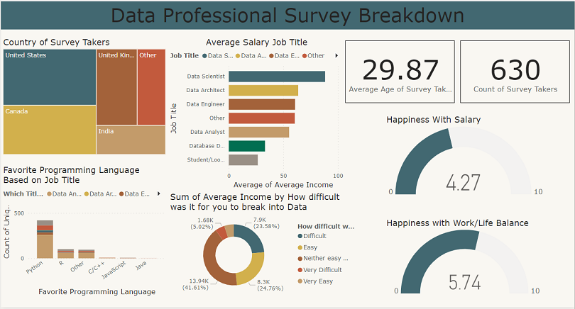
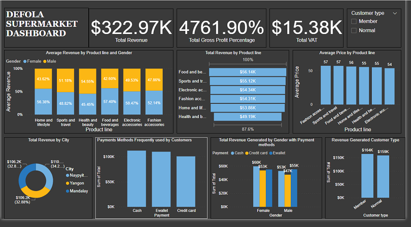
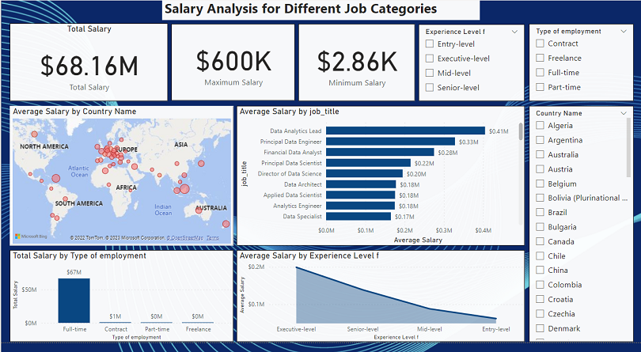

I present an insightful exploration into the findings of a comprehensive survey within the data job industry. Through the development of dynamic dashboards,
this project illuminates key trends, preferences, and challenges reported by data professionals..

This analysis delves into a dataset examining factors influencing employee attrition and also provides recommendation. However, there were absence of key data to analyze additional factors to employee attrition.

In this analysis, we aim to help the company improve retention by identifying high value customers and churn risks, and present findings to the CMO in the form of a single page report or dashboard.
Explore